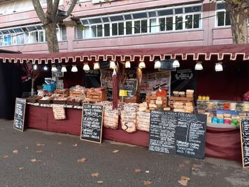
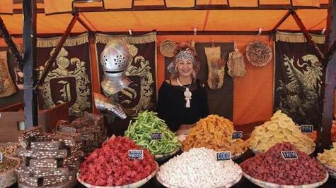

El nucli antic de Súria, conegut com el Poble Vell, es converteix durant un cap de setmana en un autèntic
mercat medieval, amb paradetes d’artesans que mostren i venen els seus productes.
Els visitants poden veure demostracions d’antics oficis com fusters, ferrers, teixidors i terrissaires,
així com conèixer les tècniques tradicionals que s’utilitzaven en aquells temps.
A més de les parades, també es poden trobar espectacles de carrer amb joglars, malabaristes,
músics medievals i grups de recreació històrica.
A banda de les activitats comercials i demostratives, la Fira Medieval d’Oficis de Súria també ofereix activitats
lúdiques i culturals per a tots els públics. S’hi programen tallers per a nens i nenes, passejades amb cavalls,
exposicions i visites guiades pel patrimoni històric de la vila. Els carrers i places del Poble Vell es decoren
amb estendards i altres elements medievals, creant una atmosfera autèntica i immersiva.
Una fira on les olors i la decoració son pròpies d'una època molt maca
Ramona Sató, visitant habitual de la Fira Medieval d'oficis
Gatronomia a la Fira
Com bé s'ha comentat abans hi ha un seguit de fets habituals que estan presents a la fira. No obstant,
del més important és la gastronomia.
Formatgeries i embotits: Són molt típiques les parades on s'exposa el productes
de km0.

Garrapiñades i dolços:
No pot faltar la part més dolça de la fira, on el producte es tractat de amb les receptes antigues.

Entrepans i arrossos: En el cas de l'arròs, sempre ha estat fet per part del Tro gros,
colla introduida a la pàgina de detall de les caramelles.
Especies i infusions: També hi ha present cada any unes paradetes on les olors t'invaeixen. A més a més,
hi ha un sortit de herbes per fer infusions segons els teus objectius.